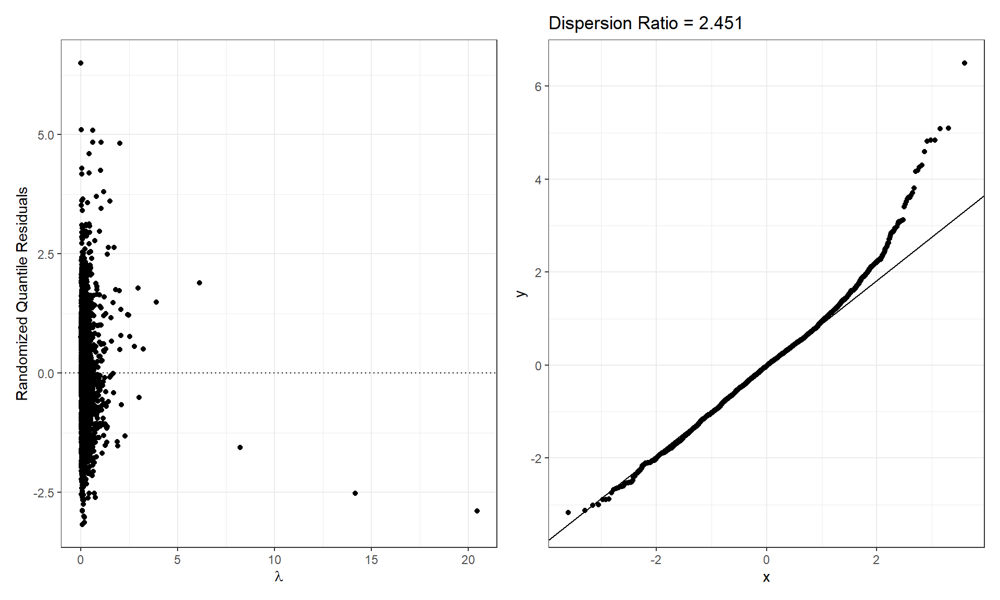
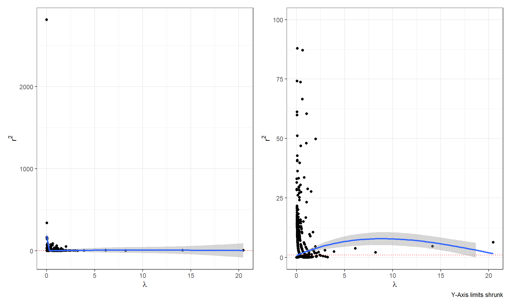

HW3
1 Question 1
Greenberg et al. (2026) investigate the geographic patterning of federal environmental crime prosecutions in the United States between 2011 and 2020 to determine how environmental and social factors influence where the strongest forms of law enforcement occur.
The study specifically addresses whether the US Environmental Protection Agency (EPA) and Department of Justice (DOJ) equitably protect communities by examining if criminal prosecutions are concentrated in the most polluted or socioeconomically disadvantaged areas.
To address these questions, the researchers analyzed data from 732 EPA-referred criminal prosecutions across 3,143 US counties. They collected information regarding:
- EPA Criminal Prosecutions: The number of criminal prosecutions from 2011 to 2020.
- Overall Environmental Quality Index: A composite measure that combines environmental and social factors to provide a holistic view of a county’s conditions.
- Water Quality Index: A measure of various factors related to the quality of water within a county. Higher values indicate better quality.
- Air Quality Index: A measure of various factors related to the quality of air within a county. Higher values indicate better quality.
- Land Quality Index: A measure of various factors related to the quality of land and soil within a county. Higher values indicate better quality.
- Socioeconomic Index: A sociodemographic measure within the Environmental Quality Index that evaluates the socioeconomic status of a county’s population. A higher score indicates higher status.
- Percent Racial Minority: The percentage of non-white residents in each county, included separately because race is not part of the EPA’s sociodemographic index.
- Metropolitan Status: A urban/rural indicator based on USDA rural-urban continuum codes (1 = metropolitan, 0 = non-metropolitan).
- County-level GDP (in billions of dollars): A measure of total economic production within a county that also indicates the level of industrial or commercial activity.
- Past Number of EPA Civil Penalties: A count of previous civil enforcement actions in the county, indicating historical levels of non-compliance.
- Distance from EPA Region Criminal Prosecution Office: The distance in kilometers from the county to the nearest office.
- EPA Region (1-10): an indicator to one of the ten geographic administrative districts established by the U.S. Environmental Protection Agency. Region 1 is the New England Area.
1.1 Part a
Fit a Poisson regression model for EPA Criminal Prosecutions (FinalEC) using Overall Environmental Quality Index (eqi_2jan2018_vc), Percent Racial Minority (pctnonwhite10), Metropolitan Status (metro), County-level GDP (gdp2017b), Past Number of EPA Civil Penalties (fac_penalty_count), Distance from EPA Region Criminal Prosecution Office (CIDDist), and EPA Region (EPAregion). Assess whether the model is appropriately fit.
1.1.1 Answer
Fitting the model here:
First checking the dispersion ratio of our model:
Code
lambdas <- predict(pois_mod, type = "response")
n = nrow(dat)
y = dat$FinalEC
rqr <- rep(NA, n)
for(i in 1:n){
ai <- ppois(y[i]-1, lambda=lambdas[i])
bi <- ppois(y[i], lambda=lambdas[i])
ui <- runif(1, ai, bi)
rqr[i] <- qnorm(ui)
}
pearson.ratio <- sum(residuals(pois_mod, type = "pearson")^2) /pois_mod$df.residual
p1 <- ggplot(data=tibble(lambda=lambdas,
e=rqr)) +
geom_hline(yintercept=0, linetype="dotted")+
geom_point(aes(x=lambda, y=e)) +
theme_bw()+
xlab(bquote(lambda))+
ylab("Randomized Quantile Residuals")
p2 <- ggplot(data=tibble(e=rqr)) +
stat_qq(aes(sample=e)) +
stat_qq_line(aes(sample=e)) +
theme_bw() +
ggtitle(paste("Dispersion Ratio =", round(pearson.ratio, 4)))
p1+p2
EEK.
Our dispersion ratio is quite a bit higher than we’d like to see. We also see a big clump of \(\lambda\)’s near zero, which may be negatively affecting our model.
Checking our predictions against the standardized Pearson residuals:
Code
ggdat <- tibble(r2= resid(pois_mod, type = "pearson")^2,
lambdas = fitted(pois_mod))
p.1 <- ggplot(ggdat) +
geom_point(aes(x=lambdas, y=r2)) +
geom_hline(yintercept = 1, linetype="dotted", color="red") +
geom_smooth(aes(x=lambdas, y=r2)) +
theme_bw() +
xlab(bquote(lambda)) +
ylab(bquote(r^2))
p.2 <- ggplot(ggdat) +
geom_point(aes(x=lambdas, y=r2)) +
geom_hline(yintercept = 1, linetype="dotted", color="red") +
geom_smooth(aes(x=lambdas, y=r2)) +
theme_bw() +
xlab(bquote(lambda)) +
ylab(bquote(r^2)) +
ylim(0,100) +
labs(caption = "Y-Axis limits shrunk")
p.1 + p.2
Looking at the shrunk down version, a curved shape indicates that another model like a quasi-poisson or negative binomial might be more appropriate here.
1.2 Part b
Fit a Negative Binomial regression model that matches the Poisson model in part (a). Assess whether the model is appropriately fit.
1.3 Part c
Use a likelihood ratio test to compare the Poisson model in part (a) to the Negative Binomial model in part (b).
Note: You can use the lrtest(...) function from the lmtest package (Zeileis and Hothorn 2002).
1.4 Part d
The researchers wanted to evaluate whether the specific indexes Water Quality Index, Air Quality Index, Land Quality Index were more informative than the Overall Environmental Quality Index. Further, they wanted to evaluate if including the Socioeconomic Index would explain additional variability in the outcome compared to the model with just the Percent Racial Minority as a socioeconomic predictor.
Fit a Poisson regression model for EPA Criminal Prosecutions (FinalEC) using Water Quality Index (water_eqi_2jan2018_vc), Air Quality Index (air_eqi_2jan2018_vc), Land Quality Index (land_eqi_2jan2018_vc), Socioeconomic Index (sociod_eqi_2jan2018_vc) Percent Racial Minority (pctnonwhite10), Metropolitan Status (metro), County-level GDP (gdp2017b), Past Number of EPA Civil Penalties (fac_penalty_count), Distance from EPA Region Criminal Prosecution Office (CIDDist), and EPA Region (EPAregion). Assess whether the model is appropriately fit.
1.5 Part e
Fit a Negative Binomial regression model that matches the Poisson model in part (d). Assess whether the model is appropriately fit.
1.6 Part f
Use a likelihood ratio test to compare the Poisson model in part (d) to the Negative Binomial model in part (e).
Note: You can use the lrtest(...) function from the lmtest package (Zeileis and Hothorn 2002).
1.7 Part g
Use the “winning” model in part (c) to show how EPA Criminal Prosecutions change with the the Overall Environmental Quality Index. Use the “winning” model in part (f) to show how EPA Criminal Prosecutions change with the Water Quality Index, Air Quality Index, Land Quality Index, Socioeconomic Index, and Percent Racial Minority. Combine the plots using patchwork so that it matches Figure 2 in the manuscript.
Note: I would create the plot differently than the authors have, though I see why they did it this way.
1.8 Part h
Compare the “winning” model in part (c) with the “winning” model in part (f) using a non-nested Vuong test. First, explain why the Vuong test is necessary and then interpret the result in the context of the research question.
Note: You can use the vuongtest(...) function from the nonnest2 package (Merkle and You 2024).
2 Question 2
2.1 Part a
In class we discussed data from McMillan (2001), who recorded the number of capuchin monkeys caught by Ache tribe members.
As part of this work, the researchers also recorded the number of nine-banded armadillo (Dasypus novemcinctus) they captured. Of note, these animals are most important in terms of biomass harvested.
Recall the capuchin monkeys required complex tasks of chasing the monkeys and showing an arrow straight up. In contrast, armadillos, which are burrowing animals, are caught by hand.
Research Question: Is the hunting of armadillo a skill that requires long periods of learning? Do those skills diminish with age?
Use the data on \(n=38\) hunters in McMillanAcheArmadillo.csv to answer the research question. Show that you have selected a reasonable model for the data and interpret your model to answer the research question.
2.2 Part b
Hill and Kintigh (2009) investigate the same age patterns of hunting ability among the Ache tribe.
Again, the central question is whether hunting requires extended periods of skill acquisition and whether those skills diminish with age.
Use the data on \(n=147\) hunters in Hill09.csv who went on 1 to 1049 hunting day-long treks between 1981 and 2007 to answer the research question.
The researchers recorded:
- Month: The numeric month of each hunting trek
- Day: The numeric day of each hunting trek
- Year: The four-digit year of each hunting trek
- ID: The Ache hunter unique identifier
- Age: The age of each Ache hunter at the time of each hunting trek
- Meat: The amount of meat resulting from each Ache hunter during each trek (in kg)
- Hours: The duration of each trek (in hours)
- Data Type: Whether the hours were recorded (1 = Yes, 0 = No)
Note: Roughly 20% of observations have the duration of the trek in hours. Here, I would simply use a per-trek analysis. Still, it would be interesting to see if the analysis would match if duration was taken into account.
Show that you have selected a reasonable model for the data and interpret your model to answer the research question.